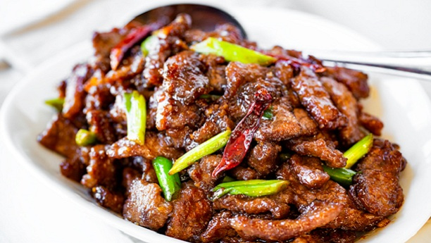

Komenic-Recipes
Mongolian beef

Description
The BEST Mongolian Beef Recipe you will ever taste!
A quick, easy and ridiculously delicious stir fry dish of tender beef coated in a slightly sweet and savory sauce, Inspired by P.F. Changs Mongolian beef recipe. Serve it over steamed rice and a side of sautéed or steamed veggies for a complete meal everyone will love! Mongolian beef is a popular stir-fry beef dish, made in a wok, served in Chinese restaurants. It was created in Taiwan, during the 1950’s, when Chinese BBQ was becoming a trendy cuisine. Its most notable trait is the tenderized slices of beef simmered together in a sweet and savory sauce.
The name of the dish refers to Mongolian barbecue style of cooking, which is quick and over high heat. The dish itself isn’t actually associated with Mongolian cuisine.
Ingredients:
- 2 New York Strip Steaks, thinly sliced (about 1 1/2 pounds)
- 3 tablespoons cornstarch
- 2 tablespoons vegetable oil, divided
- 3 cloves garlic, minced
- 1 tablespoon minced ginger
- ⅓ cup low sodium soy sauce
- ⅓ cup water
- ½ cup light brown sugar
- 2 green onions sliced into 1 inch pieces
- 1 teaspoon toasted sesame seeds optional
- salt and pepper to taste
- steamed rice for serving
Steps for cooking:
- Slice steak into 1/4″ thick piece, against the grain and season with salt and pepper.
- Toss steak pieces in cornstarch until fully and evenly coated. Set aside.
- Heat a skillet over medium-high heat and add some oil. Sauté the ginger and garlic until fragrant.
- Add soy sauce, water and sugar and bring to a boil until sugar dissolves.
- Pour sauce into a measuring cup and set aside.
- Place skillet back over heat and add more oil. Add steak and sear until evenly browned on both sides.
- Pour sauce back into skillet and stir together with meat. Allow sauce to thicken. Add green onion and continue to simmer until sauce is thick enough to coat the back of a wooden spoon.
- Serve Mongolian beef over steamed rice. So easy!
Back to Homepage
You can also check out: